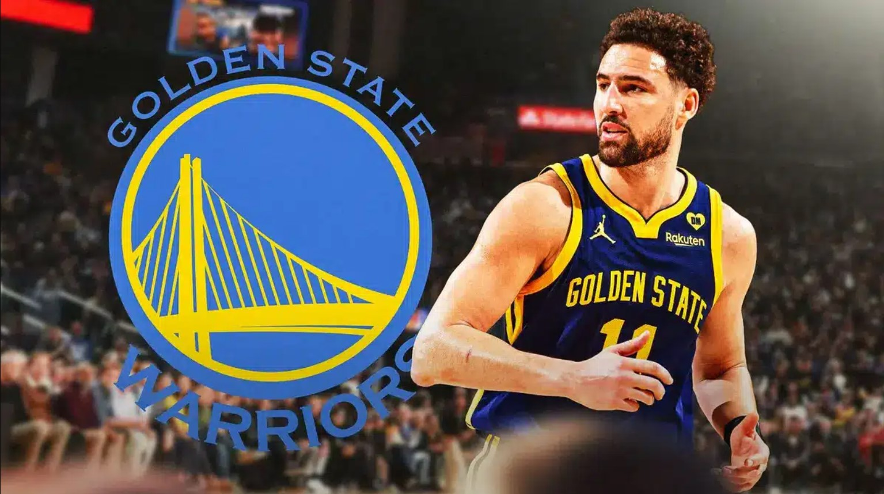
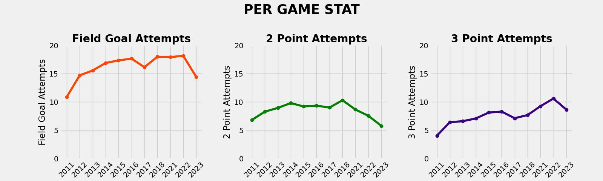
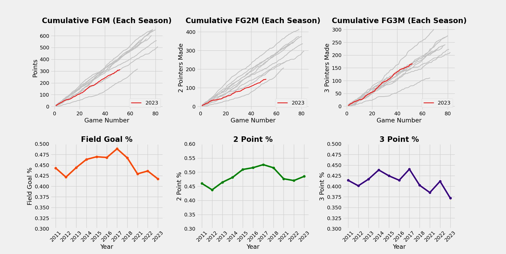
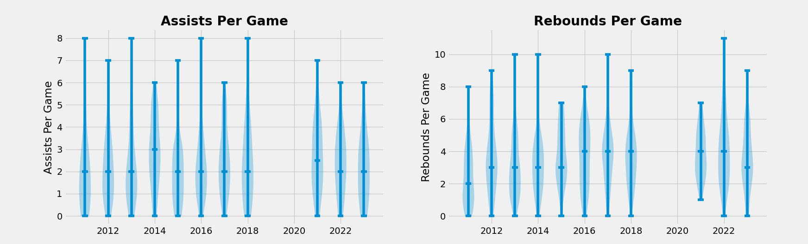
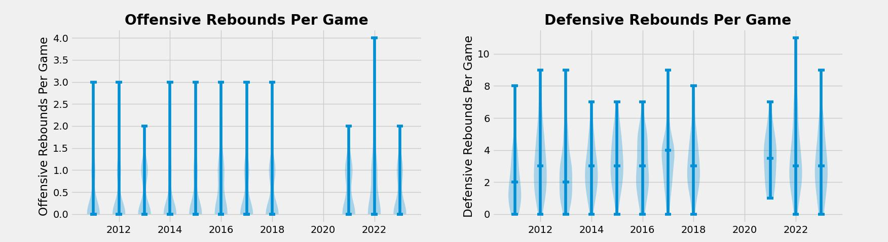
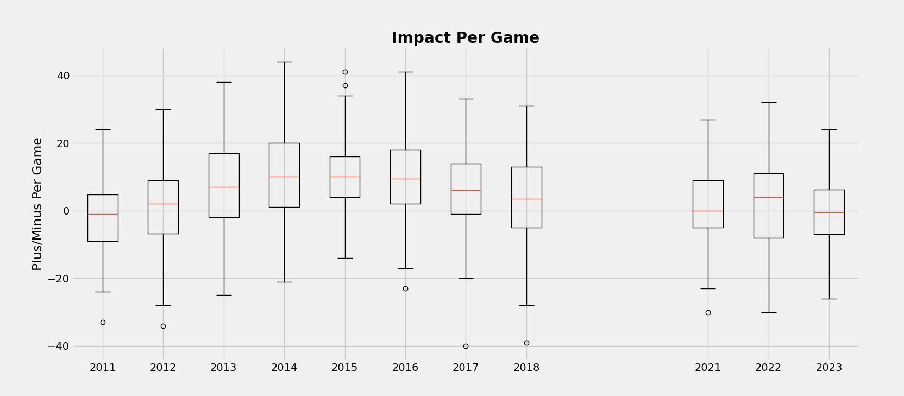
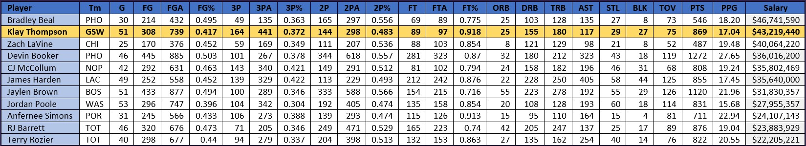

Klay Thompson's Trade Value in 2024
As an ardent Golden State Warriors fan and dedicated analyst, I've closely monitored Klay Thompson's performance dip in the 2023-24 NBA season. Driven by both fandom and analytical curiosity, I immersed myself in his stats to decipher the core of Thompson's present contributions on the court. This Python exploration delves into statistical trends and the deeper dynamics of his on-court influence.
A little about Klay Thompson - Born on February 8, 1990, in Los Angeles, California, he is a professional basketball player celebrated for his extraordinary shooting abilities and defensive skills. Having played college basketball at Washington State University, Thompson was selected as the 11th overall pick by the Golden State Warriors in the 2011 NBA Draft. Renowned for his exceptional three-point shooting, Klay Thompson is widely regarded as one of the greatest shooters in NBA history. His scoring feats, including a record-breaking 37 points in a single quarter, have significantly contributed to the Warriors' dominance. Throughout his career, Klay Thompson has been instrumental in securing four NBA championships with the Golden State Warriors, solidifying his place as a vital asset to the team.
Klay Thompson as a Shot Maker
Between 2011 and 2018, Klay Thompson's shooting skills have been a standout feature in the NBA. As a pivotal player for the Golden State Warriors, he consistently demonstrated remarkable accuracy from beyond the 3-point line, forming a potent partnership with Stephen Curry, famously known as the "Splash Brothers," which played a crucial role in the team securing four NBA championships.
Since Klay Thompson's comeback in 2022, there's been a noticeable change in his style of play, favoring three-point shots over two-pointers. Renowned for his precision from long range, Thompson has adjusted his offensive approach to maximize his strengths and bolster the Golden State Warriors' success. This adaptation mirrors the NBA's evolving landscape, where three-point shooting holds increasing significance. Thompson's return in 2022 sparked the Warriors' resurgence, culminating in their fourth NBA title. While he leaned more towards three-pointers, his performance saw a decline in 2023-24. With fewer attempts from both inside and outside the arc (as shown below), Thompson faced challenges in maintaining his peak form.
These trends become apparent through the figure below. The initial row of plots accentuates the 2023-24 season in comparison to his prior performances, revealing a decline in Klay Thompson's scoring efficiency. Despite an increase in 3-point attempts, his shooting percentage has decreased. Conversely, while his accuracy in 2-point scoring has improved, the limited number of attempts diminishes its impact on the overall game and total score. Notably, instances of low scores (3, 7, 9, 11) have intensified pressure on the Golden State Warriors, necessitating alternative strategies for securing victories and placing an increased burden on Stephen Curry to carry the team.
Klay Thompson's Offensive and Defensive Proficiency
Delving into Klay Thompson's offensive prowess reveals a player of diverse skills. While he showcases versatility in creating scoring opportunities for teammates, as reflected in his assists, his standout performance lies in his defensive prowess, particularly in securing high defensive rebounds. The statistical insights, depicted in the figure below, reveal a fluctuation in his assists per game, ranging from 0 to 6 or 8 in a season, with an average settling around two per game. This nuanced statistical profile suggests that while Klay makes meaningful contributions to playmaking, his primary strengths are more prominently featured in other aspects of the game, notably scoring and defense, rather than in being a dominant playmaker.
The figure below provides a detailed breakdown of Klay Thompson's rebounding performance, distinguishing between offensive and defensive rebounds. Notably, the data highlights that his forte lies in securing defensive rebounds, showcasing a significant strength in his ability to contribute defensively on the boards.
Klay Thompson's Impact On The Game
Amidst the Golden State Warriors' era of triumph, Klay Thompson's court influence proved notably positive, as depicted in the figure below. Post his return, the initial season marked parity in scoring, followed by improvement the next year. However, this year signals a concerning trend, as Klay's presence on the court correlates with the team's struggles, resulting in a decline in performance and conceding points to the opposing teams.
The Real Value of Klay Thompson
Klay finds himself bound by the weight of his past success. Revered for his sharpshooting skills, fans anticipate greatness. Though still capable of dropping 35 points a night, the challenge lies in delivering consistent and reliable performances that the team can consistently bank on. Despite being the second-highest-paid Shooting Guard in the NBA, with an annual salary of $43.2 million, Klay Thompson finds himself trailing behind peers earning over $20 million. His ranking second to last in Points Per Game within this salary range raises concerns about his on-court impact. Evaluating factors such as his evolving shot strategy, impending age of 35, and extensive experience with six NBA appearances and four championships, a realistic assessment suggests a trade value around $30 million.
After 12 years as a starter, Klay Thompson recently came off the bench for the first time. Coach Steve Kerr sees him as a crucial asset for the second team. While there may be fluctuations in shooting percentages and a potential dip in athleticism, Klay's leadership, extensive experience, and high basketball IQ bring an invaluable dimension to the Warriors, emphasizing his enduring impact beyond the stat sheet.
References:
- NBA: https://www.nba.com/
- NBA API: https://github.com/swar/nba_api
- NBA Player Salaries - 2023-2024: https://www.espn.com/nba/salaries